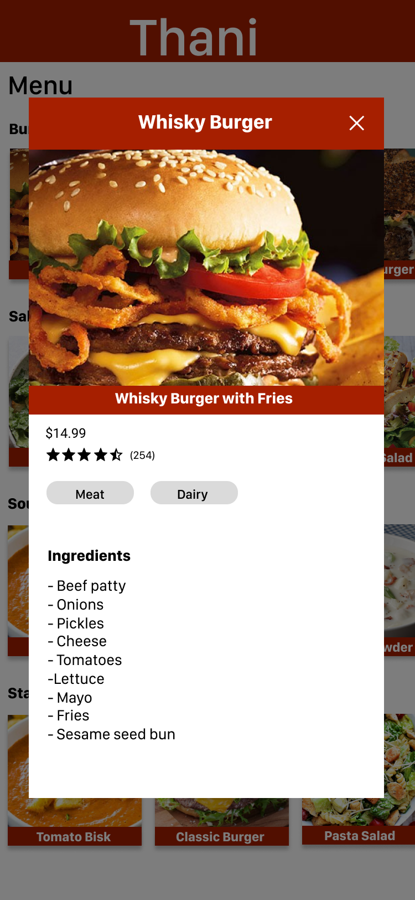

Restaurant menus come in all shapes and sizes. They aren't the same and sometimes they contain text or ingredients that are hard to understand. Customers often have questions about menu items. Seeing images of food before ordering helps customers make the right choice without creating false expectations. SeeFood is a digital menu that is activated by scanning a QR code sticker. You scan the code with your phone camera. Once the QR code is scanned, the web app launches with the restaurant's menu.
Roles
UX Design
UX Research
Deliverables
User Stories
User Flows
Paper Prototype
Wireframes
User Testing
Tools
Figma
Pen & Paper
HTML
CSS
GitHub
React
Text based menu items are often not so clear, and the ingredients are a mystery.
Users make decisions based on their own standards for taste and spice. For instance, if you choose medium spice at a restaurant but it turns out hot & Spicy then there is some level of difference.
Food comes out different from what the user expected.
With SeeFood you can see images & ingredients of menu items.
With SeeFood you can see highly rated food items to help you make a better decision.
With SeeFood there is no more worrying about sticky and confusing text based menus.
People sometimes dont understand text based menus.
People make better food choices with images and feel more satisfied with their choice.
People want to know what is in their food to double check for allergies.
The Design Process
We went straight into customer discovery by walking the streets of Downtown Seattle. We spoke to both restaurant owners and customers. Our assumptions were validated as the users spoke about the current menu. We spoke to 10 restaurant owners and 23 customers.
Prefer seeing images with menu items
Would use their phone to scan the QR code sticker
Have ordered food that they did not enjoy eating
Generally have a positive Restaurant experience
Figma was used to develop high-fidelity wireframes.
We tested the web app during our pitch at TechStars Startup Weekend with 150+ audience members. The reaction we got was positive from both community members and potential investors.
Iterations were made based on user feedback from testing. However due to our 72 hour deadline we were not able to apply the design mockup to development.

My team won an award for devloping an MVP and pitching it to the Seattle Community. We were awarded for having an innovative idea.
The highest priority for our team was to create an MVP that addressed important user needs. Those user tasks are to scan a QR code, see images of menu items, and to see ingredients of what's in the food. Our team used our user stories to help drive focus on designing & developing the prototype. We had a 72-hour deadline but in that time we researched, designed, & developed the frontend & backend of the version 1 prototype. I designed the final iteration based off of feedback received during the user test. I enjoyed working with my team to develop a unique menu expereince concept.